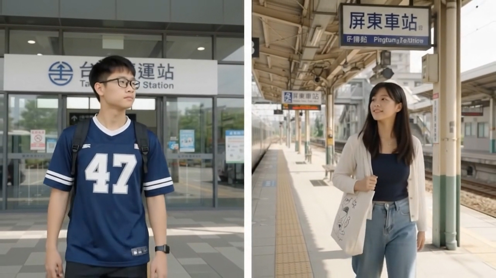

「從那年 走到今天，從教室走到了紅毯前。」
高中時的相遇，遠距離的等待，還有那些一起走過的日常。
謝謝你曾參與我們人生中的不同片段。
這一次，想邀請你走進我們的婚禮，成為這部愛情電影裡最珍貴的觀眾。
🖼️ 劇照相冊 (Movie Gallery)
「這些片段沒有劇本，卻成了我們最捨不得刪除的畫面。」

有些相遇
當時沒想過會成為一輩子 2016
當時沒想過會成為一輩子 2016

距離改變了見面的方式
沒有改變想念 2016.12.25
沒有改變想念 2016.12.25

後來才明白
幸福藏在一次次的接送與等待裡 2025.10.25
幸福藏在一次次的接送與等待裡 2025.10.25